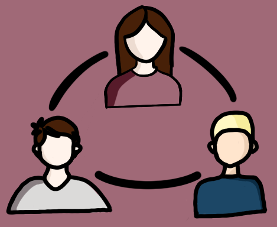
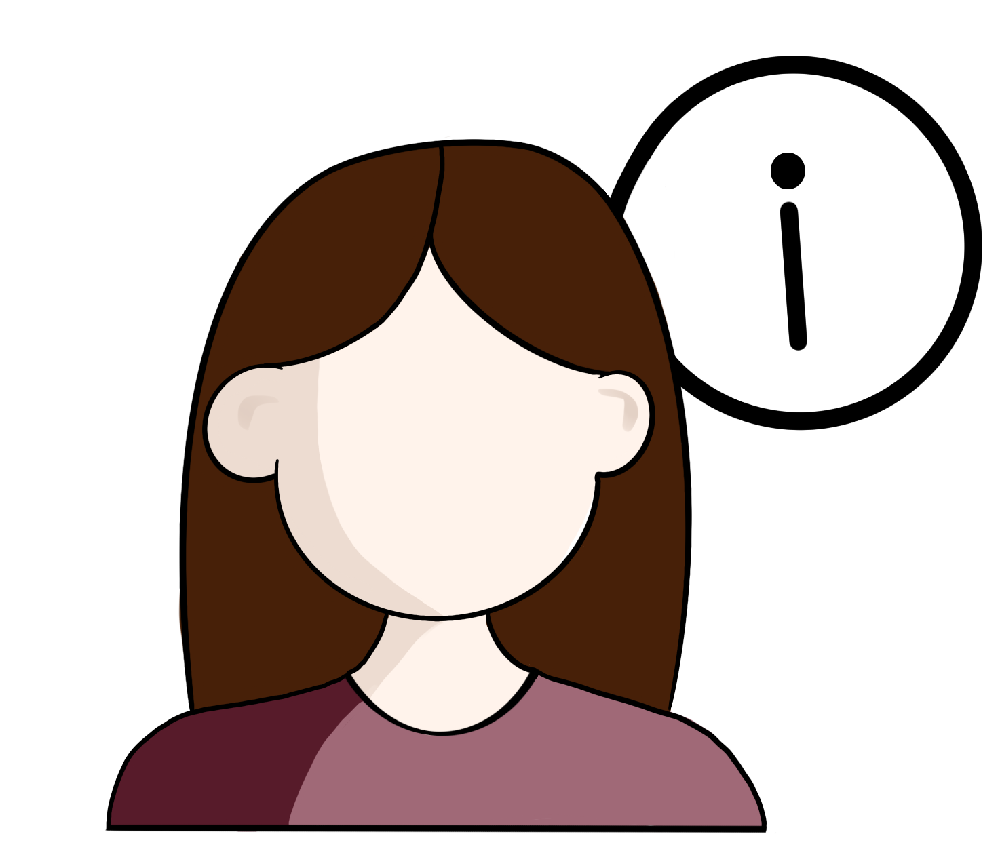
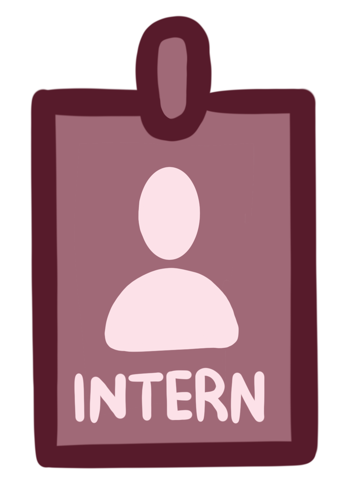
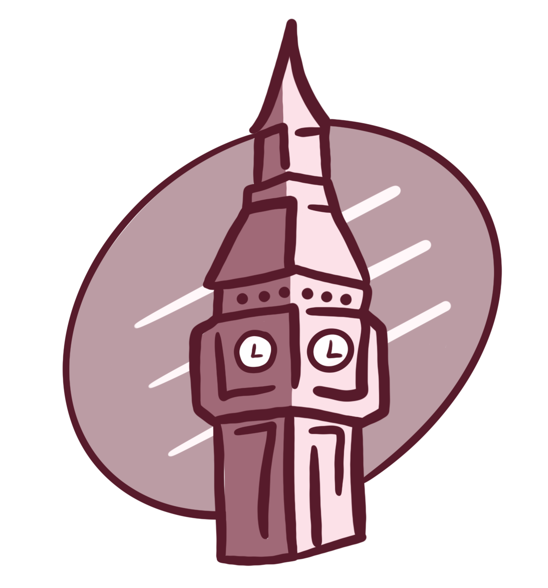

Python + FastAPI + BERT
BERT Tabanlı Etik Mail Kontrolü
Türkçe kurumsal e-postalarda toksik, etik dışı ve ayrımcı ifadeleri tespit etmeye yönelik NLP tabanlı web prototipi.
Yazılım Mühendisi
Yazılım mühendisliği son sınıf öğrencisiyim ve Haziran ayında mezun olmayı hedefliyorum. Eğitimim boyunca kazandığım analitik düşünme ve teknik yetkinlikleri, kullanıcı odaklı ve değer üreten yazılım projelerine taşımaya odaklanıyorum.

Python + FastAPI + BERT
Türkçe kurumsal e-postalarda toksik, etik dışı ve ayrımcı ifadeleri tespit etmeye yönelik NLP tabanlı web prototipi.
ASP.NET Core + SQLite
Kurum içi stok takibini kolaylaştıran; ürün yönetimi, kritik stok uyarısı ve rol bazlı erişim özelliklerine sahip web uygulaması.
Frontend geliştirme, derin öğrenme tabanlı yazılım projeleri ve kullanıcı deneyimi odaklı uygulamalar üzerine yoğunlaşıyorum.
Web arayüz tasarımı, görev takibi ve ekip içinde yazılım geliştirme süreçleri konusunda pratik deneyim kazandım.

İletişime açık, sorumluluk sahibi ve uyumlu çalışırım. Problemleri önce analiz eder, gerektiğinde destek alarak çözümü ilerletirim.

Yazılım Mühendisliği 4. sınıf öğrencisiyim ve Haziran ayında mezun olacağım. Üniversite hayatım boyunca frontend geliştirme, veritabanı sistemleri ve yazılım geliştirme süreçleri üzerine yoğunlaştım.

Staj deneyimlerimde kullanıcı dostu arayüzler geliştirme, proje ihtiyaçlarını analiz etme, teknik problemleri araştırarak çözme ve ekip içi çalışma süreçlerine uyum sağlama konularında kendimi geliştirdim.

İngilizce teknik kaynaklarla rahat çalışabiliyor, teknik dokümanları yazılım geliştirme süreçlerinde aktif şekilde kullanabiliyorum.
Kısa vadede hedefim; yazılım geliştirme alanında gerçek projelerde aktif rol almak, farklı teknolojilerle çalışma deneyimi kazanmak ve sürekli öğrenmeye devam etmek.